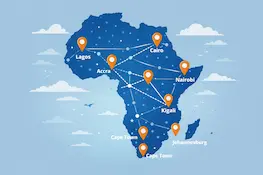

NNOGS African Tech Hubs & Startups
Innovation Across Africa
Explore the fastest-growing technology hubs shaping Africa's future.
Explore HubsAfrica's Growing Tech Ecosystem
Africa is home to some of the fastest-growing technology ecosystems in the world. From Lagos to Nairobi, Cairo to Cape Town, innovation hubs are supporting startups in fintech, health tech, agriculture, education, and artificial intelligence. These hubs provide mentorship, funding, and collaborative spaces that help entrepreneurs turn ideas into impactful businesses.
Major Tech Hub Locations
Major innovation hubs are located across Africa, including Nigeria, Kenya, South Africa, Egypt, Ghana, and Rwanda.
Innovation Across Africa
From Lagos to Nairobi, tech hubs are driving innovation, entrepreneurship, and digital transformation.